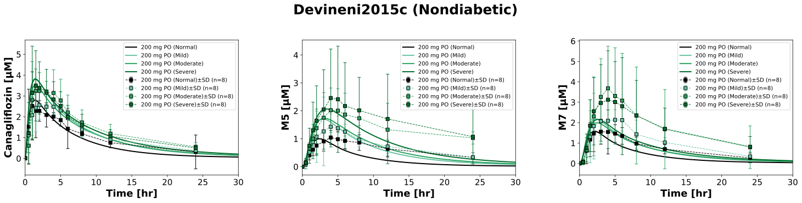
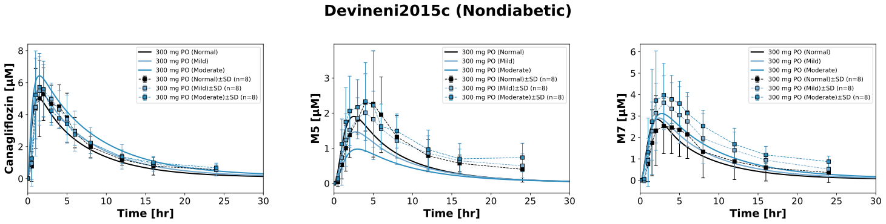
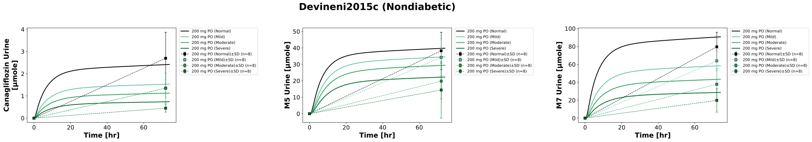
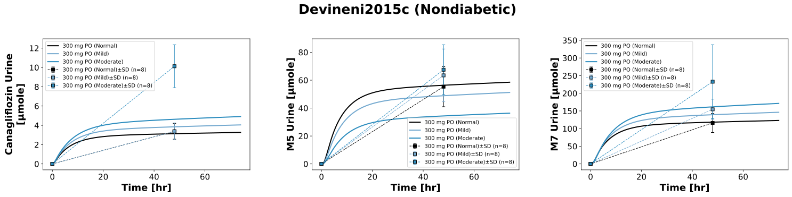
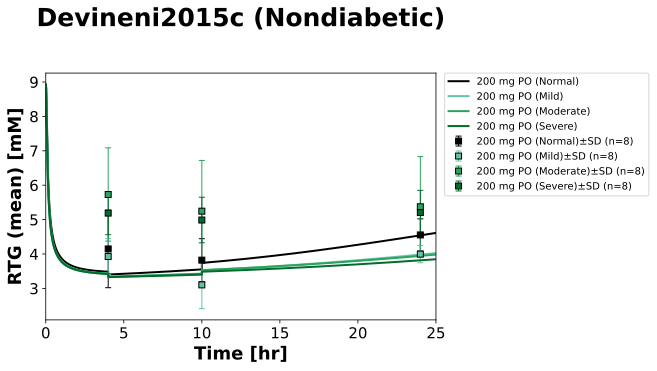
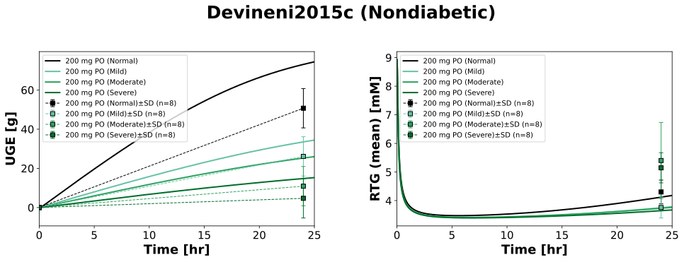

Overview
Models
| model | source |
|---|---|
| model | canagliflozin_body_flat.xml |
Datasets
Figures (6)












Code
"""Simulation experiment of the study Devineni2015c."""
from typing import ClassVar, override
from pkpdsim.metadata import (
ApplicationForm,
Dosing,
Fasting,
Health,
PKPDMappingMetaData,
Route,
Tissue,
)
from sbmlsim import Q
from sbmlsim.data import DataSet
from sbmlsim.fit import FitData, FitMapping
from sbmlsim.plot import Axis, Figure
from sbmlsim.simulation import Change, Simulation
from pkdb_models.models.canagliflozin import MODEL
from pkdb_models.models.canagliflozin.experiments.base_experiment import (
CanagliflozinSimulationExperiment,
)
class Devineni2015c(CanagliflozinSimulationExperiment):
"""Simulation experiment of Devineni2015c.
Single doses of canagliflozin in renal impairment (200 mg) and in hepatic
impairment (300 mg) in nondiabetic subjects, 10 min before a standard
breakfast after an overnight fast (the model has no food effect,
Devineni2015e). The groups with end stage renal disease on hemodialysis
(esrd_pre_renal, esrd_post_renal) are not simulated: the model has no
dialysis.
"""
#: the renal groups: the class of the renal function and the mean
#: creatinine clearance (Cockcroft-Gault) of the 8 subjects of the group
#: [ml/min] (the individual values of Fig4); the renal function is X/101
conditions_renal: ClassVar[dict[str, tuple[str, float]]] = {
"normal_renal": ("Normal renal function", 118.4),
"mild_renal": ("Mild renal impairment", 62.0),
"moderate_renal": ("Moderate renal impairment", 41.9),
"severe_renal": ("Severe renal impairment", 25.4),
}
conditions_hepatic: ClassVar[dict[str, str]] = {
"normal_hepatic": "Control",
"mild_hepatic": "Mild cirrhosis",
"moderate_hepatic": "Moderate cirrhosis",
}
info: ClassVar[dict[str, str]] = {
"can": "canagliflozin",
"m5": "M5",
"m7": "M7",
}
# [kg]
bodyweights_renal: ClassVar[dict[str, float]] = {
"normal_renal": 92.5,
"mild_renal": 70.1,
"moderate_renal": 77.7,
"severe_renal": 72.7,
}
bodyweights_hepatic: ClassVar[dict[str, float]] = {
"normal_hepatic": 78.3,
"mild_hepatic": 79,
"moderate_hepatic": 74.7,
}
fpg = 5 # [mM] (nondiabetic, not reported)
#: the RTG of Fig5 is the mean of the urine collections 0-4, 4-10 and
#: 10-24 hr; the mean RTG is reset at the start of each interval [hr]
rtg_resets: ClassVar[list[float]] = [4, 10]
@override
def datasets(self) -> dict[str, DataSet]:
dsets = {}
for fig_id in ["Fig2", "Fig3", "Fig5", "Tab2A", "Tab3A", "Tab5A"]:
df = self.load_dataframe(fig_id)
for label, df_label in df.groupby("label"):
label = str(label)
dset = DataSet.from_df(df_label, self.ureg)
# unit conversion to mole/l and mole; the urinary amounts of M5
# and M7 are % dose corrected for the molecular weight, i.e.
# canagliflozin equivalents
if label.startswith(
("canagliflozin", "M5_cumulative", "M7_cumulative")
):
dset.unit_conversion("mean", 1 / self.Mr.can)
elif label.startswith("M5_CAN"):
dset.unit_conversion("mean", 1 / self.Mr.m5)
elif label.startswith("M7_CAN"):
dset.unit_conversion("mean", 1 / self.Mr.m7)
elif label.startswith("glucose_RT"):
dset.unit_conversion("mean", 1 / self.Mr.glc)
dsets[self.to_sid(label)] = dset
return dsets
@override
def simulations(self) -> dict[str, Simulation]:
tcsims = {}
# renal: the urine is collected over 0-72 hr; the mean RTG is reset at
# the start of the intervals of Fig5; `_rtg24` without the resets for
# the 24-hr mean RTG of Tab5 (the weighted mean of the intervals)
rtg_reset = {
"KI__RTG_int": Q(0, "mM*min"),
"KI__RTG_time": Q(0, "min"),
}
for condition, (_, clcr) in self.conditions_renal.items():
preinit_changes = {
**self.default_changes(),
"BW": Q(self.bodyweights_renal[condition], "kg"),
"PODOSE_can": Q(200, "mg"),
"[KI__fpg]": Q(self.fpg, "mM"),
"KI__f_renal_function": Q(clcr / 101, "dimensionless"),
}
tcsims[self.to_sid(f"po_can200_{condition}")] = Simulation(
time_unit="hr",
end=74,
preinit_changes=preinit_changes,
changes=[Change(self.rtg_resets, rtg_reset)],
)
tcsims[self.to_sid(f"po_can200_{condition}_rtg24")] = Simulation(
time_unit="hr",
end=26,
preinit_changes=preinit_changes,
)
# hepatic: the urine is collected over 0-48 hr
for condition, hepatic_class in self.conditions_hepatic.items():
tcsims[self.to_sid(f"po_can300_{condition}")] = Simulation(
time_unit="hr",
end=74,
preinit_changes={
**self.default_changes(),
"BW": Q(self.bodyweights_hepatic[condition], "kg"),
"PODOSE_can": Q(300, "mg"),
"[KI__fpg]": Q(self.fpg, "mM"),
"f_cirrhosis": Q(
self.cirrhosis_map[hepatic_class], "dimensionless"
),
},
)
return tcsims
@override
def fit_mappings(self) -> dict[str, FitMapping]:
mappings = {}
# renal: name of the data, observable, suffix of the simulation
for condition in self.conditions_renal:
health = (
Health.HEALTHY
if condition == "normal_renal"
else Health.RENAL_IMPAIRMENT
)
for name, sid, suffix in [
("canagliflozin", "[Cve_can]", ""),
("M5", "[Cve_m5]", ""),
("M7", "[Cve_m7]", ""),
("canagliflozin_cumulative_amount", "Aurine_can", ""),
("M5_cumulative_amount", "Aurine_m5", ""),
("M7_cumulative_amount", "Aurine_m7", ""),
# change from baseline, the baseline UGE of nondiabetic
# subjects is close to 0
("glucose_cumulative_amount", "KI__UGE", ""),
# mean RTG of the intervals 0-4, 4-10, 10-24 hr
("glucose_RT", "KI__RTG_mean", ""),
# 24-hr mean RTG, the weighted mean of the intervals
("glucose_RT_mean", "KI__RTG_mean", "_rtg24"),
]:
tissue = Tissue.URINE if "cumulative" in name else Tissue.PLASMA
mappings[self.to_sid(f"fm_po_can200_{condition}_{name}")] = FitMapping(
self,
reference=FitData(
self,
dataset=self.to_sid(f"{name}_CAN200_{condition}"),
xid="time",
yid="mean",
yid_sd="mean_sd",
count="count",
),
observable=FitData(
self,
task=self.to_sid(f"task_po_can200_{condition}{suffix}"),
xid="time",
yid=sid,
),
metadata=PKPDMappingMetaData(
tissue=tissue,
route=Route.PO,
application_form=ApplicationForm.TABLET,
dosing=Dosing.SINGLE,
health=health,
fasting=Fasting.FASTED,
),
)
# hepatic
for condition in self.conditions_hepatic:
health = (
Health.HEALTHY
if condition == "normal_hepatic"
else Health.HEPATIC_IMPAIRMENT
)
for name, sid in [
("canagliflozin", "[Cve_can]"),
("M5", "[Cve_m5]"),
("M7", "[Cve_m7]"),
("canagliflozin_cumulative_amount", "Aurine_can"),
("M5_cumulative_amount", "Aurine_m5"),
("M7_cumulative_amount", "Aurine_m7"),
]:
tissue = Tissue.URINE if "cumulative" in name else Tissue.PLASMA
mappings[self.to_sid(f"fm_po_can300_{condition}_{name}")] = FitMapping(
self,
reference=FitData(
self,
dataset=self.to_sid(f"{name}_CAN300_{condition}"),
xid="time",
yid="mean",
yid_sd="mean_sd",
count="count",
),
observable=FitData(
self,
task=self.to_sid(f"task_po_can300_{condition}"),
xid="time",
yid=sid,
),
metadata=PKPDMappingMetaData(
tissue=tissue,
route=Route.PO,
application_form=ApplicationForm.TABLET,
dosing=Dosing.SINGLE,
health=health,
fasting=Fasting.FASTED,
),
)
return mappings
@override
def figures(self) -> dict[str, Figure]:
return self.figures_by_sid(
self._figure_renal(),
self._figure_hepatic(),
self._urine_renal(),
self._urine_hepatic(),
self._figure_rtg(),
self._figure_uge(),
)
def _renal_label(self, impairment: str) -> str:
"""Label of a renal group."""
return f"200 mg PO ({impairment.split()[0]})"
def _hepatic_label(self, hepatic_class: str) -> str:
"""Label of a hepatic group."""
short = hepatic_class.split()[0] if hepatic_class != "Control" else "Normal"
return f"300 mg PO ({short})"
def _figure_renal(self) -> Figure:
"""Plasma concentrations in renal impairment."""
fig = Figure(
experiment=self,
sid="Fig_renal",
num_rows=1,
num_cols=3,
name=f"{self.__class__.__name__} (Nondiabetic)",
)
plots = fig.create_plots(
xaxis=Axis(self.label_time, unit=self.unit_time, min=0, max=30),
legend=True,
)
plots[0].set_yaxis(self.label_can, unit=self.unit_can)
plots[1].set_yaxis(self.label_m5, unit=self.unit_m5)
plots[2].set_yaxis(self.label_m7, unit=self.unit_m7)
for condition, (impairment, _) in self.conditions_renal.items():
label = self._renal_label(impairment)
for k, sid in enumerate(self.info):
# simulation
plots[k].add_data(
task=self.to_sid(f"task_po_can200_{condition}"),
xid="time",
yid=f"[Cve_{sid}]",
label=label,
color=self.renal_colors[impairment],
)
# data
plots[k].add_data(
dataset=self.to_sid(f"{self.info[sid]}_CAN200_{condition}"),
xid="time",
yid="mean",
yid_sd="mean_sd",
count="count",
label=label,
color=self.renal_colors[impairment],
)
return fig
def _figure_hepatic(self) -> Figure:
"""Plasma concentrations in hepatic impairment."""
fig = Figure(
experiment=self,
sid="Fig_hepatic",
num_rows=1,
num_cols=3,
name=f"{self.__class__.__name__} (Nondiabetic)",
)
plots = fig.create_plots(
xaxis=Axis(self.label_time, unit=self.unit_time, min=0, max=30),
legend=True,
)
plots[0].set_yaxis(self.label_can, unit=self.unit_can)
plots[1].set_yaxis(self.label_m5, unit=self.unit_m5)
plots[2].set_yaxis(self.label_m7, unit=self.unit_m7)
for condition, hepatic_class in self.conditions_hepatic.items():
label = self._hepatic_label(hepatic_class)
for k, sid in enumerate(self.info):
# simulation
plots[k].add_data(
task=self.to_sid(f"task_po_can300_{condition}"),
xid="time",
yid=f"[Cve_{sid}]",
label=label,
color=self.cirrhosis_colors[hepatic_class],
)
# data
plots[k].add_data(
dataset=self.to_sid(f"{self.info[sid]}_CAN300_{condition}"),
xid="time",
yid="mean",
yid_sd="mean_sd",
count="count",
label=label,
color=self.cirrhosis_colors[hepatic_class],
)
return fig
def _urine_renal(self) -> Figure:
"""Urinary amounts in renal impairment (0-72 hr)."""
fig = Figure(
experiment=self,
sid="Fig_urine_renal",
num_rows=1,
num_cols=3,
name=f"{self.__class__.__name__} (Nondiabetic)",
)
# the legends inside the panels cover data
fig.settings = {**fig.settings, "legend_position": "outside"}
plots = fig.create_plots(
xaxis=Axis(self.label_time, unit=self.unit_time), legend=True
)
plots[0].set_yaxis(self.label_can_urine, unit=self.unit_can_urine)
plots[1].set_yaxis(self.label_m5_urine, unit=self.unit_m5_urine)
plots[2].set_yaxis(self.label_m7_urine, unit=self.unit_m7_urine)
for condition, (impairment, _) in self.conditions_renal.items():
label = self._renal_label(impairment)
for k, sid in enumerate(self.info):
# simulation
plots[k].add_data(
task=self.to_sid(f"task_po_can200_{condition}"),
xid="time",
yid=f"Aurine_{sid}",
label=label,
color=self.renal_colors[impairment],
)
# data
plots[k].add_data(
dataset=self.to_sid(
f"{self.info[sid]}_cumulative_amount_CAN200_{condition}"
),
xid="time",
yid="mean",
yid_sd="mean_sd",
count="count",
label=label,
color=self.renal_colors[impairment],
)
return fig
def _urine_hepatic(self) -> Figure:
"""Urinary amounts in hepatic impairment (0-48 hr)."""
fig = Figure(
experiment=self,
sid="Fig_urine_hepatic",
num_rows=1,
num_cols=3,
name=f"{self.__class__.__name__} (Nondiabetic)",
)
plots = fig.create_plots(
xaxis=Axis(self.label_time, unit=self.unit_time), legend=True
)
plots[0].set_yaxis(self.label_can_urine, unit=self.unit_can_urine)
plots[1].set_yaxis(self.label_m5_urine, unit=self.unit_m5_urine)
plots[2].set_yaxis(self.label_m7_urine, unit=self.unit_m7_urine)
for condition, hepatic_class in self.conditions_hepatic.items():
label = self._hepatic_label(hepatic_class)
for k, sid in enumerate(self.info):
# simulation
plots[k].add_data(
task=self.to_sid(f"task_po_can300_{condition}"),
xid="time",
yid=f"Aurine_{sid}",
label=label,
color=self.cirrhosis_colors[hepatic_class],
)
# data
plots[k].add_data(
dataset=self.to_sid(
f"{self.info[sid]}_cumulative_amount_CAN300_{condition}"
),
xid="time",
yid="mean",
yid_sd="mean_sd",
count="count",
label=label,
color=self.cirrhosis_colors[hepatic_class],
)
return fig
def _figure_rtg(self) -> Figure:
"""Mean renal threshold of glucose of the urine collections (Fig5)."""
fig = Figure(
experiment=self,
sid="Fig_rtg",
num_rows=1,
num_cols=1,
name=f"{self.__class__.__name__} (Nondiabetic)",
)
# the legends inside the panel cover data
fig.settings = {**fig.settings, "legend_position": "outside"}
plots = fig.create_plots(
xaxis=Axis(self.label_time, unit=self.unit_time, min=0, max=25),
legend=True,
)
plots[0].set_yaxis(self.label_rtg_mean, unit=self.unit_rtg)
for condition, (impairment, _) in self.conditions_renal.items():
label = self._renal_label(impairment)
# simulation
plots[0].add_data(
task=self.to_sid(f"task_po_can200_{condition}"),
xid="time",
yid="KI__RTG_mean",
label=label,
color=self.renal_colors[impairment],
)
# data: the mean of an interval at its end
plots[0].add_data(
dataset=self.to_sid(f"glucose_RT_CAN200_{condition}"),
xid="time",
yid="mean",
yid_sd="mean_sd",
count="count",
label=label,
color=self.renal_colors[impairment],
linestyle="",
)
return fig
def _figure_uge(self) -> Figure:
"""Urinary glucose excretion and 24-hr mean RTG (Tab5)."""
fig = Figure(
experiment=self,
sid="Fig_uge",
num_rows=1,
num_cols=2,
name=f"{self.__class__.__name__} (Nondiabetic)",
)
plots = fig.create_plots(
xaxis=Axis(self.label_time, unit=self.unit_time, min=0, max=25),
legend=True,
)
plots[0].set_yaxis(self.label_uge, unit=self.unit_uge)
plots[1].set_yaxis(self.label_rtg_mean, unit=self.unit_rtg)
for condition, (impairment, _) in self.conditions_renal.items():
label = self._renal_label(impairment)
for k, (sid, name) in enumerate(
[
("KI__UGE", "glucose_cumulative_amount"),
("KI__RTG_mean", "glucose_RT_mean"),
]
):
# simulation
plots[k].add_data(
task=self.to_sid(f"task_po_can200_{condition}_rtg24"),
xid="time",
yid=sid,
label=label,
color=self.renal_colors[impairment],
)
# data
plots[k].add_data(
dataset=self.to_sid(f"{name}_CAN200_{condition}"),
xid="time",
yid="mean",
yid_sd="mean_sd",
count="count",
label=label,
color=self.renal_colors[impairment],
)
return fig
if __name__ == "__main__":
MODEL.run_experiments(Devineni2015c, output_dir=Devineni2015c.__name__)